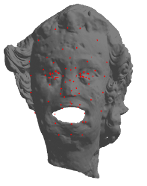
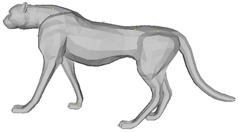
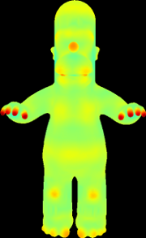
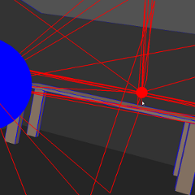
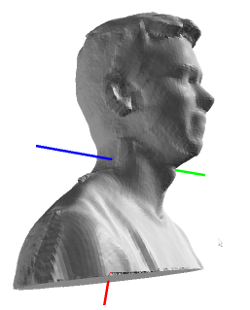
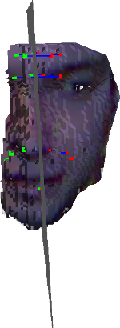
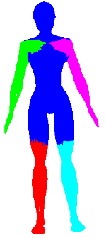

Digital 3D Geometry
Instructor: Chris Tralie
Duke University
Tuesday/Thursday 4:40 - 5:55 PM, Perkins LINK 071 (Classroom 5)
Office Hours: Monday 12:30PM - 2:30PM PM, Thursday 9AM - 11AM, Gross Hall 324 (map)
{kind=link}
|  |  |  | |
|  |  |  |  |
Course Evolving: Site Last Updated 5/5/2016
Overview
This hands on course will be a breadth-first introduction to the world of 3D geometry, as seen by a computer. Students will learn how to represent, analyze, match, manipulate, and morph 3D shapes. Students will also be introduced to a series of fun applications of digital geometry, such as sound rendering, 3D rotation modeling, shape alignment, "Shape Google," and shape stretching, via a series of individual and group programming assignments in Javascript. For engineering and computer science students, the course can serve as a safe, visually-oriented introduction to more advanced mathematical topics in geometry, such as linearity, manifolds, topological invariants of surfaces, isometries, duality, and symmetries. Conversely, for math majors, it can serve as a practical applications course and an opportunity to develop important programming skills, algorithmic thinking, and visualization tools. The course will also include a semester-long open-ended group project. Potential projects include automatically cutting virtual surfaces into each other, exploring virtual 3D shape collections, sonifying 3D geometry, modeling and animating structures in the Nasher museum, or other topics related to the course with permission of the instructor.Sakai / Piazza
We will be using Sakai and Piazza in the course. We will only be using the Sakai page to submit assignments and to store all of the grades. Click here to visit the course Sakai web page.
For all other discussions and announcements for the course, we will be using Piazza. Click here to visit the Piazza page for the course. There you can ask and answer questions about the lecture content and assignments. It will also be an important place for us to discuss Javascript idiosyncrasies and to coordinate group work. Please also post there if you find any issues or mistakes on the web site, as that may be an opportunity for raffle points
Readings
There is no official textbook for the course, since it covers such a broad array of hand-picked topics. Some of the original papers on the techniques that will be presented in the course are linked from the syllabus, and each student will be required to summarize at least one of the papers by the end of the semester. If students would like to have a textbook, the two below are personal favorites of mine and would be the most useful references to go along with the course- [BRONSTEIN]: Bronstein, Alexander M., Michael M. Bronstein, and Ron Kimmel. Numerical geometry of non-rigid shapes. Springer, 2008.
- [LENGYEL]: Lengyel, Eric. Mathematics for 3D game programming and computer graphics. Cengage Learning, 2012.
Table of Contents
- http://graphics.stanford.edu/courses/cs468-12-spring/
- http://www.cs.columbia.edu/~keenan/Projects/DGPDEC/
- http://www.cs.princeton.edu/courses/archive/spring14/cos426/index.php
- http://www.cs.princeton.edu/courses/archive/fall14/cos526/index.php
- http://www.hao-li.com/Hao_Li/Hao_Li_-_teaching_%5BCSCI_599__Digital_Geometry_Processing_SS_2014%5D.html
- http://www.cs.berkeley.edu/~jrs/mesh/
- http://www2.cs.uh.edu/~chengu/Teaching/Spring2013/Analysis_Spring2013.html
- http://www-bcf.usc.edu/~jbarbic/cs520-s15/
- http://resources.mpi-inf.mpg.de/departments/d4/teaching/ss2012/geomod/
Prerequisites
The only strict prerequisite is Data Structures and Algorithms (COMPSCI 201). Basic familiarity with linear algebra and calculus 2 will help, but required math will be reviewed during the course as needed.Programming Language
Most assignments will be written in Javascript, but no assumption will be made about prior Javascript knowledge! Those who can write code in any one of Java, C++, or Python can quickly learn the differences. There are three main reasons for using Javascript in the course:- It is widely used in modern web programming, so it will be useful in many projects beyond this course
- It requires no special software to run, and it works in the browser. As a result, it makes it easy to develop on nearly any computer, and it allows students to share their work online
- People on the more mathematical side get to learn powerful web graphics programming techniques for communicating their ideas in the future with live demos on their web sites, rather than static images
NOTE: There will be one or two assignment in Python/Numpy, and plenty of guidance and sample code will be provided to those groups who are less familiar
Grading
| Invidiual And Group Programming Assignments | 60% |
| Final Project | 30% |
| Midterm Exam | 5% |
| Class Participation | 5% |
Classroom Participation
Though much time will be spent on lecturing, this course will be more interactive than usual for an engineering/computer science course of this size. The goal is to get everyone involved in their learning real time as much as possible.If a few students are participating disproportionately, the instructor reserves the right to use a wheel of fortune app to randomly call on people from the roster.
Raffle Points / Group Work
In addition to ordinary participation that follows the natural rhythm of a lecture, most days there will be at least one "raffle point problem," which is a question that follows on the heels of newly presented material. Students will split into groups of 4-5 and try to work through the problems together. When a group of students believe they have figured out the answer, they raise their hand. The other students can continue to work while the instructor verifies that the answer is correct. If the answer is correct, the students present the answer to the class. At that point, each student in the group receives a raffle point (please visit the raffle tab above for more information on raffle points). If the group is not correct upon the instructor checking, then the groups continue this process until one gets it correct, and then the competition is over.The instructor reserves the right to shuffle seats at the beginning of class so that different students work together
Overall Participation Score
The overall participation score will factor in general classroom attendance, and final project feedback, as explained on the final project page.Late Days
Individual mini assignments must be submitted on time. For the larger group assignments, each group has 7 late days available to be used throughout the semester. Use them or lose them. They may be spread out over all the assignments or used all at once. Groups will indicate how many late days they have used on each assignment. The 7 day rule helps ensure that the instructor can get all of the large assignments graded in approximately a week in the case that a group takes all of the late days at once. If groups are changed, then the new groups have the minimum number of late days remaining from all of the students in that group.On the individual assignments, or on the large group assignments once all late days have been used, students will lose points at the following rate (unless an excuse from the dean is provided):
- -5% for work submitted between 1 minute - 6 hours late
- -10% for work submitted up to 12 hours late
- -15% for work submitted up to 24 hours late
- -25% for work submitted up to 48 hours late
- -40% for work submitted up to 96 hours late
- -60% for work submitted more than 96 hours late
Collaboration Policy
Students are allowed to work in groups of 2 to 3 on each of the 4 large programming assignments. Ideally the groups will be fixed after the first assignment. There will also be 5-6 mini assignments that are to be completed individually. Communication between groups and students is allowed, but it is expected that every group/student's code will be completely distinct! Please do not copy code off of the Internet (repurposing code from the Internet will probably make it harder anyway because the assignments are so specialized).I will try to hold a few "hackathons" (extended office hours) throughout the semester to provide additional help with assignments and the final projects. I want everyone to succeed, so there will be no reason to cheat!